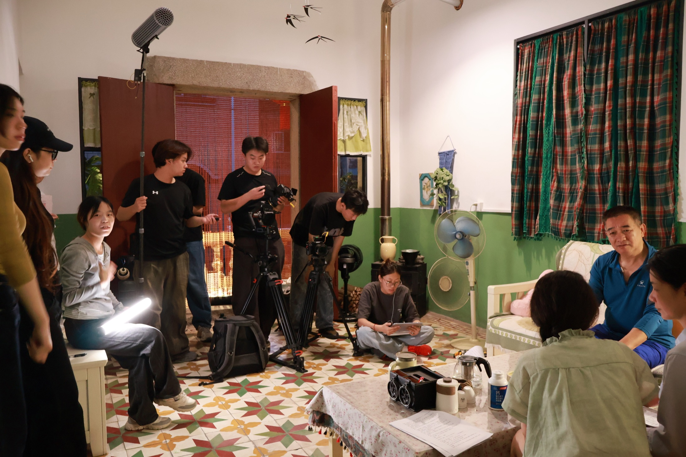
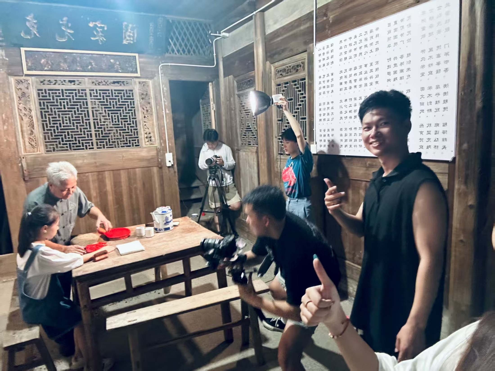
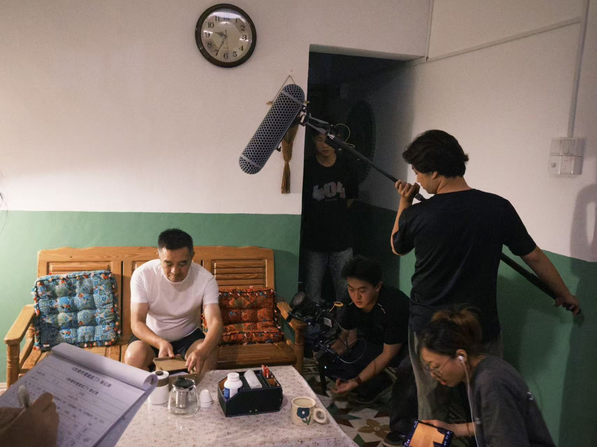
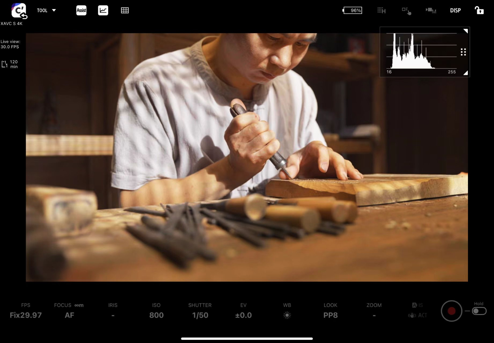
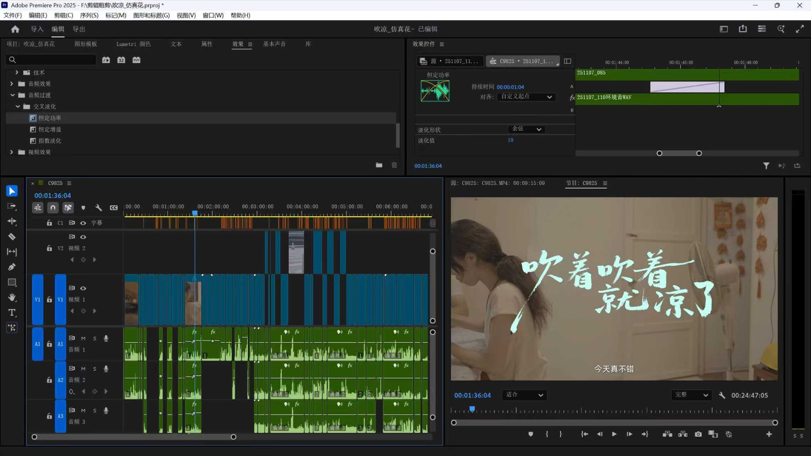

INTRODUCTION / 影像创作者
方卓煌是一名在真实现场、地方文化与品牌传播之间工作的影像创作者。他以导演、摄影与后期，将人物、空间和正在发生的生活组织成可以被看见的叙事。
BASED IN QUANZHOUAVAILABLE FOR SELECTED COLLABORATIONS2024—2026
ABOUT / 关于我
方卓煌
FANG ZHUOHUANG
导演 · 摄影 · 后期 · 视觉设计
- 年龄
- 21 岁
- 教育
- 泉州师范学院 · 服装与服饰设计
- 现居
- 福建泉州
Second Chapter / 第二人生
人只能生活一次，影像却使一段生活有了被重新观看的可能。
“‘附近’不是一个有边界的单位。”
项飙
我的许多拍摄，都从不太显眼的地方开始：清晨刚开门的市场、村里一年一度的仪式、雨中的训练场、毕业散场后的校园，或一件刚被摆到灯前的产品。
我先学习设计，后来把越来越多的时间交给影像。摄影因此成为我的“第二人生”。它不是对原有生活的逃离，而是让我获得另一种进入现场、理解他人的方式。
我跟随非遗仪式穿过村落，也观察食物如何连接一座城市的记忆；我记录教练与学生在雨中训练，陪他们走到毕业前的最后一场主场比赛；我也与品牌、景区、媒体和校园机构合作，在传播目标与真实生活之间寻找合适的表达分寸。
现实先发生，镜头随后到来。观看、等待、取景和裁切不只是技术动作，它们共同决定一段生活将如何被看见。拍摄留下现场的片段，剪辑再把这些片段放回时间。影像不是现实的替身，而是一种带着位置、责任和判断的叙述。
这份作品集先呈现摄影与影像项目，再展开制作过程、个人经历与工作方法。取景框、定位线、网格和裁切标记构成统一的视觉线索，也提醒我始终为画面之外的现实保留空间。
连城县融媒体中心
暑期扬帆计划社会实践，参与文旅、非遗与地方文化影像工作。
OXS 傲希
面向欧洲市场的消费电子产品摄影、短视频与视觉构思。
华为高校花粉俱乐部
高校花部长，协同品牌、图书馆、校媒与社团推进校园共创。
泉州师范学院学生工作部易班发展中心
视频站长，直接负责 20 人团队与近 20 个校园内容项目。
CAPABILITIES / 能力概览
前期选题研究、传播目标梳理、脚本与分镜、踩点和拍摄计划。
现场导演、摄影、航拍、人物沟通，以及不可重来场景中的快速判断。
后期素材管理、结构剪辑、调色、字幕、声音整理与多平台版本交付。
协作能够对接品牌、景区、媒体、校园机构与小型创作团队。
SELECTED RESULTS / 代表成果
- 影像福建省大学生影像大赛两项一等奖、一项二等奖。
- 传播文旅、校园与品牌项目累计获得百万级传播反馈。
- 跨专业全国大学生电子商务“三创赛”全国二等奖，海峡杯工业设计大赛鞋品组优秀奖。
05 / 07
WORKING APPROACH / 工作方式
从理解现场，到完成作品。
“从基层上看去，中国社会是乡土性的。”
费孝通
我理解的“在地”不是停留在原地，而是先看清人与环境之间的关系，再决定镜头站在哪里、故事从哪里开始。
这种方法同样适用于地方文化、校园、消费电子和城市生活。设计训练帮助我整理形式，影像帮助我组织时间，AI 与数据工具用于检索、预演和验证。题材可以变化，工作原则保持一致：先理解问题，再选择工具。
从资料研究、人物关系和传播目标出发，判断作品真正需要回答的问题，并在拍摄前建立清楚的叙事方向。
- 资料与对象研究
- 核心问题与传播目标
- 脚本、分镜与拍摄计划
RESEARCH / SCRIPT / STORY根据人物和环境组织机位、光线、声音与现场节奏。面对不可重来的真实事件，保持观察的耐心和拍摄的分寸。
- 踩点与现场判断
- 人物沟通与拍摄调度
- 摄影、航拍与同期声音
DIRECTION / CAMERA / SOUND把分散的现场信息重新放回时间，通过素材管理、结构剪辑和视听整理，完成节奏连贯、视觉统一的成片。
- 素材管理与结构剪辑
- 声音、字幕与基础包装
- 调色与多画幅版本
EDIT / COLOR / POST从前期对接到最终交付维护清楚的协作边界，在时间和资源有限的情况下推进人员、场地、版本与发布规格。
- 客户与合作方沟通
- 人员、场地与进度协调
- 版本管理与平台交付
PLAN / COORDINATE / DELIVER在摄影、影像、平面与动态视觉之间切换，并把 AI 与数据工具用于检索、预演和验证，而不是替代现场判断。
- 平面与动态视觉延展
- 资料整理与内容检索
- 视觉预演与方案验证
DESIGN / MOTION / AI
Sony A7M4 / FX30 / A7S III · DJI Mavic 3 Pro / Air 3 / Stabilizer · Insta360 · Premiere Pro / DaVinci Resolve / After Effects / Photoshop / 剪映
PROCESS / 制作过程
镜头之外，作品如何完成。
这里不重复展示成片，而是保留能说明工作方法的关键证据：前期理解现场，拍摄时处理人物、机位与协作，后期再把素材组织成完整叙事。
- 01 / 研究与前期梳理对象、场景与传播目标，确定叙事入口。
- 02 / 现场与协作根据人物和环境调整机位、光线与拍摄节奏。
- 03 / 剪辑与声音筛选素材，建立结构，并完成声音与画面节奏。
- 04 / 审核与交付根据发布场景统一版本、画幅与输出规格。

01现场调度 / On-set Direction

02在地拍摄 / Field Production

03片场剧照 / On-set Still

04画面监看 / Camera Monitor

05剪辑与声音 / Post-production